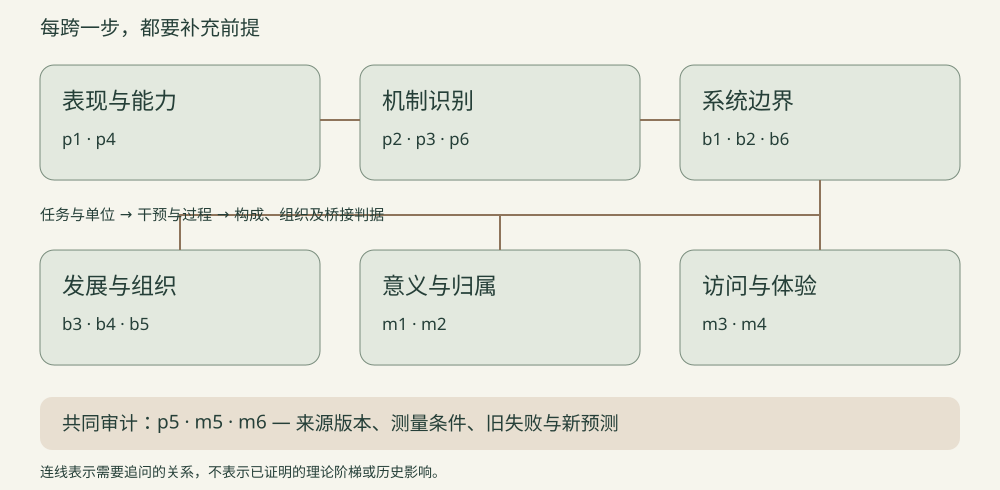

成绩支持能力判断，需要任务与资源条件
一次成绩是特定系统在特定任务、评分和资源条件下的表现。要推断跨任务能力或技能获取效率，须分别提供适用域、留出单位和学习过程证据。
原句、反方与修订依据对前三篇18条结论、已有定位主张、反方与阅读范围作编辑性共同复核；本阶段未新增原典阅读或原始数据复算，非独立同行评审。
18条结论 · 13条收紧措辞 · 5条维持原句 · 31条来源记录 · 9项设计仍未执行
打开正式网站的本地预览 · 验收范围与结果 · 后续研究排序

编辑关系图 · 术语、重复与冲突复核 · 来源版本与阅读范围
一次成绩是特定系统在特定任务、评分和资源条件下的表现。要推断跨任务能力或技能获取效率，须分别提供适用域、留出单位和学习过程证据。
原句、反方与修订依据共同因素可压缩相关结构并服务预测；把它解释为单一共同心理原因，需要排除能生成同样观察的替代机制。
原句、反方与修订依据可靠的损伤结果可约束某结构在所测条件中的因果角色；考虑断连、覆盖和代偿后，仍不能仅凭性能下降与位置映射唯一确定其算法或组织。
原句、反方与修订依据所读群体研究报告多任务表现的共同变化，但成员能力与协作过程的预测贡献仍有分歧；任务、计分和分析单位未对齐，或缺少有效操纵时，不能把预测贡献当作协作的因果效应。
原句、反方与修订依据留出任务、留出群体、第一因素方差和平均提取方差分别回答不同问题。当前采用 Riedl 正式更正的 AVE 19.6%，但未独立复算；相似百分比与不同版本不能直接合并。
原句、反方与修订依据每次观察或干预可排除部分竞争模型，但模型在已测条件中等价，并不保证在新情境中等价。综合结论应保留仍未区分的模型与下一项检验。
原句、反方与修订依据在驾驶舱保存速度的任务分析中，人、物与程序可构成有用的功能解释单位；系统完成任务并不自动证明个人记忆容量提高，也未确定心灵的本体边界。
原句、反方与修订依据移除效应、可靠可用或双向反馈，在有效操纵与测量前提下可支持某种依赖；要进一步称为认知的组成部分，还须说明功能整合、内容和过程种类的判据。双方对这些判据仍有实质争论。
原句、反方与修订依据动作历史、测试时身体状态和当前工具支持可以分别影响表现；一次移除效应不足以倒推出长期发展作用，也不能唯一识别其实现机制。
原句、反方与修订依据按本篇所读版本，自创生的生产组织、稳健存续、适应性调节和主体性承担不同解释任务。由前一项推进到后一项，或进一步推到智能与体验，均须明写新增组织要求与桥接前提。
原句、反方与修订依据在所读极简知觉交互实验中，真实伙伴的总点击优势与更常维持接触有关；按接触机会校正后，原文未发现伙伴与诱饵的显著识别差异。这既不证明统计等效，也不证明个人没有识别能力。
原句、反方与修订依据在已保存协议的有限模型中，闭环与回放可以产生完全相同的基线轨迹；改变系统状态后才出现不同响应。轨迹一致不能独自识别相互依赖结构。
原句、反方与修订依据外部指称、交际意图和内部概念角色是不同解释目标。评价“理解”必须先固定目标与证据标准；一项不满足，不能无条件推出所有意义都不存在，任一项满足也不自动涵盖其余各项。
原句、反方与修订依据在指定的指称识别任务中，有效且一致的外部锚点可以排除候选映射；这种识别结果尚不能独自裁定操作者或整体是否理解，更不能直接给出主观意义的归属。
原句、反方与修订依据实际报告、可供推理使用的访问能力与具有体验须分别登记。报告可以提供访问的证据，无报告条件也需测量有效性论证；这种概念区分本身并未证明三者经验上独立。
原句、反方与修订依据计算功能、物理因果结构与体验之间的桥梁可能是定义、经验假说或解释性同一主张。比较理论须保留这些区别、理论版本及测量规则；相关结果或人为演示数值都不能自行证明同一主张。
原句、反方与修订依据COGITATE约束的是约定条件下的具体神经预测：结果含支持、受挑战和不确定。预注册PPC未支持两方，新增DFC较有利于GNWT；新增分析不改写原预测结果，也不能合成整套理论的赢家判定。
原句、反方与修订依据失败预测约束的是理论、辅助机制和测量条件的组合；有价值的修订应说明改了哪一层，并在新证据上承担可失败的承诺。
原句、反方与修订依据